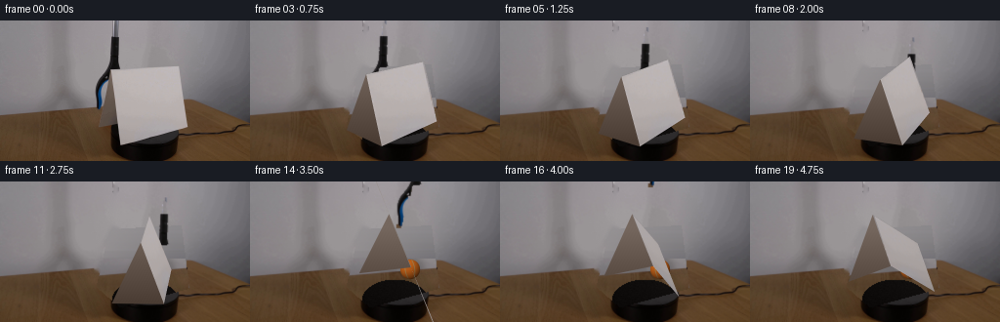
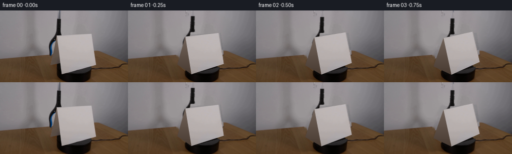
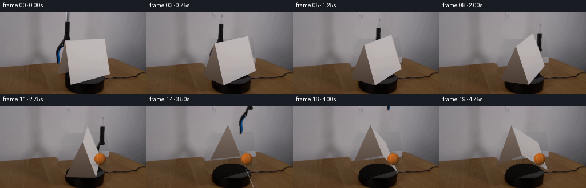
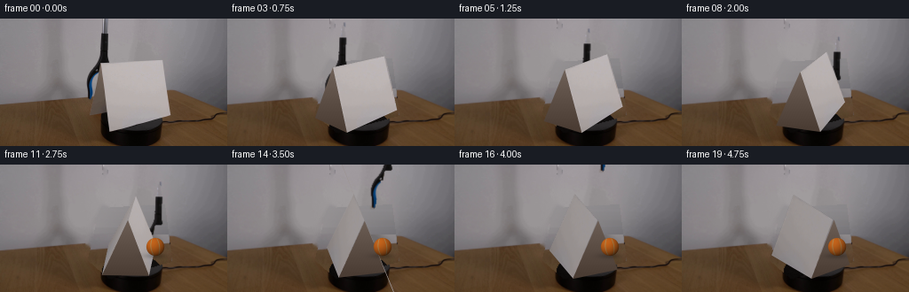

CODING AGENTS AS PIXEL WORLD MODELS
traex/GPT-6.1-Sol · 0004
点击播放 · 原生 RGB 像素
逐轮保存的候选
回放视频、检查图与代码变化。
每份候选均可单独播放。实际图片检查记录在下方工具轨迹中。
候选 01播放与检查图
点击播放 · 原生 RGB 像素


展开代码变化
--- 上一保存版本
+++ 本次保存版本
@@ -0,0 +1,201 @@
+from pathlib import Path
+import math
+import numpy as np
+import cv2
+from PIL import Image
+import artifact_io
+
+ROOT=Path(__file__).resolve().parent
+W,H=256,144
+S=3
+rng=np.random.default_rng(12)
+source=np.array(Image.open(ROOT/'first_frame.png').convert('RGB'))
+
+# Physical card: an upright folded sheet, with a broad white face and a
+# brown shaded return. Coordinates are measured in sheet widths.
+face0=np.float32([[113,50],[184,46],[191.6,108.4],[123,127]])
+side0=np.float32([[113,50],[123,127],[99.5,106.8]])
+
+def polygon_mask(points):
+ m=np.zeros((H,W),np.uint8)
+ cv2.fillPoly(m,[np.round(points).astype(np.int32)],255)
+ return m
+
+cardmask=polygon_mask(face0)|polygon_mask(side0)
+cardmask=cv2.dilate(cardmask,np.ones((3,3),np.uint8))
+# Recover the stationary wall and wood from nearby portions of the same image.
+# The visible outer platform is kept verbatim; its hidden circular top is
+# rebuilt later so that the moving screen can reveal it.
+clean=source.copy()
+for y in range(H):
+ for x in np.where(cardmask[y]>0)[0]:
+ if y<79:
+ lx=89;rx=199
+ frac=(x-lx)/(rx-lx)
+ c=(1-frac)*source[y,lx].astype(float)+frac*source[y,rx]
+ c+=rng.normal(0,.45,3)
+ else:
+ sx=max(0,x-92)
+ c=source[y,sx].astype(float)
+ clean[y,x]=np.clip(c,0,255)
+# Grabber extraction, retaining its photographed surface texture.
+toolmask=np.zeros((H,W),np.uint8)
+for y in range(0,93):
+ if y<16:
+ l,r=116,122
+ elif y<46:
+ l,r=112.5,123
+ elif y<61:
+ l,r=112.5-(y-46)*.72,123-(y-46)*.58
+ elif y<69:
+ l,r=102-(y-61)*.68,113-(y-61)*.68
+ elif y<80:
+ l,r=96.5+(y-69)*.09,105.3
+ else:
+ l,r=98+(y-80)*.12,105.4
+ for x in range(max(0,int(l)-2),min(W,int(r)+3)):
+ v=source[y,x].astype(int)
+ if (v.mean()<110 or v[2]-v[0]>9) and not cardmask[y,x]:
+ toolmask[y,x]=255
+# Handle obscures the upper left edge of the sheet. Keep that region too.
+for y in range(46,60):
+ for x in range(97,122):
+ v=source[y,x]
+ if v.mean()<90 and x<114 and x>109-(y-49)*.8:
+ toolmask[y,x]=255
+# Subpixel alpha from the local wall brightness provides clean edges.
+toola=toolmask.astype(np.float32)/255
+for y,x in zip(*np.where(toolmask)):
+ wall=clean[y,x].mean()
+ val=source[y,x].mean()
+ if val>70 and source[y,x,2]-source[y,x,0]<10:
+ toola[y,x]=np.clip((wall-val)/(wall-25),.15,1)
+# Inpaint tool holes using a narrowly delimited local operation.
+clean=cv2.inpaint(clean,cv2.dilate(toolmask,np.ones((3,3),np.uint8)),4,cv2.INPAINT_TELEA)
+
+# The platform is a dark circular turntable. Keep the original visible rim,
+# while interpolating its black top underneath the initial cardstock.
+yy,xx=np.mgrid[:H,:W]
+platform=(xx-148.0)**2/34.0**2+(yy-122.0)**2/22.0**2<1
+hidden=platform&(cardmask>0)
+noise=rng.normal(0,1.05,(H,W))
+for c,base in enumerate([14,12,11]):
+ val=base+.07*(xx-145)-.13*(yy-120)+noise
+ clean[:,:,c][hidden]=np.clip(val[hidden],2,27)
+# A faint shadow extends from the fixed rim onto the wood.
+base_hi=cv2.resize(clean,(W*S,H*S),interpolation=cv2.INTER_CUBIC).astype(np.float32)
+
+# Texture the sheet directly from its original broad face.
+tw,th=252,264
+texcorners=np.float32([[0,0],[tw-1,0],[tw-1,th-1],[0,th-1]])
+texture=cv2.warpPerspective(source,cv2.getPerspectiveTransform(face0,texcorners),(tw,th),flags=cv2.INTER_CUBIC)
+# Avoid bringing antialiased wall pixels onto the rotating white face.
+for c in range(3):
+ ch=texture[:,:,c]
+ for x in range(4):ch[:,x]=ch[:,5]
+ for x in range(tw-4,tw):ch[:,x]=ch[:,tw-6]
+ for y in range(3):ch[y]=ch[4]
+ for y in range(th-3,th):ch[y]=ch[th-5]
+texture=texture.astype(np.float32)
+
+
+def project(P,angle):
+ P=np.asarray(P,float)
+ a=math.radians(angle)
+ x=P[:,0]*math.cos(a)+P[:,1]*math.sin(a)
+ y=-P[:,0]*math.sin(a)+P[:,1]*math.cos(a)
+ z=P[:,2]
+ # Weak perspective calibrated to the source sheet edges.
+ return np.column_stack((145+68*x+34*y+3.5*z+3*x*z,
+ 107.5-18*x+30*y-59*z+13*x*z))
+
+def blend(im,col,alpha):
+ if alpha.ndim==2:alpha=alpha[:,:,None]
+ im[:]=im*(1-alpha)+col*alpha
+
+
+def render_card(im,angle):
+ front=project([[-.5,0,1],[.5,0,1],[.5,.35,0],[-.5,.35,0]],angle)*S
+ left=project([[-.5,0,1],[-.5,.35,0],[-.5,-.35,0]],angle)*S
+ right=project([[.5,0,1],[.5,-.35,0],[.5,.35,0]],angle)*S
+ normal=math.cos(math.radians(angle))-0.45*math.sin(math.radians(angle))
+ # Triangular folded end: source color is umber, not a new object.
+ def side(points):
+ mask=np.zeros((H*S,W*S),np.uint8)
+ cv2.fillConvexPoly(mask,np.round(points).astype(np.int32),255,lineType=cv2.LINE_AA)
+ Y,X=np.mgrid[:H*S,:W*S]
+ lum=np.clip(113-(Y/S-54)*.55,75,117)+.7*np.sin(X*.7+Y*.37)
+ col=np.stack([lum,lum-14,lum-23],2).astype(np.float32)
+ blend(im,col,mask.astype(float)/255)
+ side(left if angle<65 else right)
+ matrix=cv2.getPerspectiveTransform(texcorners,front.astype(np.float32))
+ # Slow real lighting variation as the broad face turns away from the lamp.
+ light=0.90+0.10*abs(math.cos(math.radians(angle)))
+ tx=texture*light
+ warped=cv2.warpPerspective(tx,matrix,(W*S,H*S),flags=cv2.INTER_CUBIC)
+ alpha=cv2.warpPerspective(np.ones((th,tw),np.float32),matrix,(W*S,H*S),flags=cv2.INTER_LINEAR)
+ blend(im,warped,np.clip(alpha,0,1))
+ # Thin paper cut edge catches light.
+ for a,b in [(0,1),(1,2)]:
+ cv2.line(im,tuple(np.round(front[a]).astype(int)),tuple(np.round(front[b]).astype(int)),(154*light,149*light,148*light),max(1,S//2),cv2.LINE_AA)
+ return front
+
+
+def ball_layer(im,center,radius,seed=0):
+ cx,cy=center[0]*S,center[1]*S;r=radius*S
+ Y,X=np.mgrid[:H*S,:W*S]
+ dx=(X+.5-cx)/r;dy=(Y+.5-cy)/r
+ rr=dx*dx+dy*dy
+ z=np.sqrt(np.maximum(0,1-rr))
+ lit=np.clip(.54+ .43*(-.40*dx-.60*dy+.70*z),.25,1.0)
+ # Matte orange fuzzy rubber with two cream curved tennis seams.
+ grain=1.8*np.sin(X*2.71+Y*.43)+1.1*np.sin(Y*2.21-X*.77)
+ col=np.stack([202*lit+grain,103*lit+grain*.6,29*lit+grain*.35],2)
+ seam=np.minimum(abs(dx-(.47-.23*dy*dy+.11*dy)),abs(dx-(-.50+.27*dy*dy+.09*dy)))
+ sa=np.exp(-(seam/.045)**2)*.85*(rr<.95)
+ seamcol=np.stack([174*lit,156*lit,104*lit],2)
+ col=col*(1-sa[:,:,None])+seamcol*sa[:,:,None]
+ alpha=np.clip((1-np.sqrt(rr))*r+.5,0,1)
+ blend(im,col.astype(np.float32),alpha)
+
+
+def tool_layer(im,dx,dy,opening=0):
+ # Move photographed shaft and jaw; the top naturally remains offscreen.
+ M=np.float32([[1,0,dx*S],[0,1,dy*S]])
+ tex=cv2.resize(source.astype(np.float32)*toola[:,:,None],(W*S,H*S),interpolation=cv2.INTER_LINEAR)
+ alpha=cv2.resize(toola,(W*S,H*S),interpolation=cv2.INTER_LINEAR)
+ tex=cv2.warpAffine(tex,M,(W*S,H*S),flags=cv2.INTER_LINEAR)
+ alpha=cv2.warpAffine(alpha,M,(W*S,H*S),flags=cv2.INTER_LINEAR)
+ blend(im,tex/np.maximum(alpha[:,:,None],1e-5),alpha)
+
+
+def smooth(u):
+ u=np.clip(u,0,1);return u*u*(3-2*u)
+
+frames=[source.copy()]
+for index in range(1,20):
+ t=index/4
+ # Continuous clockwise rotation on the table; the ball is lowered on the
+ # far side, released, and stays where placed rather than following the tool.
+ angle=21*t
+ u=smooth((t-.10)/2.25)
+ bx=125+39*u
+ by=65+25*u
+ dx=bx-114
+ dy=by-71
+ if t>2.6:
+ v=smooth((t-2.6)/1.65)
+ dx+=5*v
+ dy-=113*v
+ im=base_hi.copy()
+ # The tennis ball lies just behind the folded screen. Both it and the
+ # descending grabber are correctly hidden by cardstock in the near field.
+ if t<4.5:
+ tool_layer(im,dx,dy)
+ ball_layer(im,(bx,by),10.4-.3*u)
+ render_card(im,angle)
+ frame=np.clip(cv2.resize(im,(W,H),interpolation=cv2.INTER_AREA),0,255).astype(np.uint8)
+ frames.append(frame)
+frames=np.stack(frames)
+assert np.array_equal(frames[0],source)
+artifact_io.save(frames,ROOT)
候选 02播放与检查图
点击播放 · 原生 RGB 像素

展开代码变化
--- 上一保存版本
+++ 本次保存版本
@@ -68,7 +68,7 @@
for y,x in zip(*np.where(toolmask)):
wall=clean[y,x].mean()
val=source[y,x].mean()
- if val>70 and source[y,x,2]-source[y,x,0]<10:
+ if val>70 and int(source[y,x,2])-int(source[y,x,0])<10:
toola[y,x]=np.clip((wall-val)/(wall-25),.15,1)
# Inpaint tool holes using a narrowly delimited local operation.
clean=cv2.inpaint(clean,cv2.dilate(toolmask,np.ones((3,3),np.uint8)),4,cv2.INPAINT_TELEA)
@@ -179,8 +179,8 @@
# far side, released, and stays where placed rather than following the tool.
angle=21*t
u=smooth((t-.10)/2.25)
- bx=125+39*u
- by=65+25*u
+ bx=114+61*u
+ by=71+22*u
dx=bx-114
dy=by-71
if t>2.6:
@@ -194,6 +194,14 @@
tool_layer(im,dx,dy)
ball_layer(im,(bx,by),10.4-.3*u)
render_card(im,angle)
+ if t >= 2.50:
+ # After placement the turntable screen swings away from the ball.
+ # It is now visible past the folded end, with a soft felt contact shadow.
+ cx,cy=bx*S,by*S
+ Y,X=np.mgrid[:H*S,:W*S]
+ sh=.22*np.exp(-((X-cx)**2/(13*S)**2+(Y-(cy+10*S))**2/(3*S)**2))
+ blend(im,np.zeros_like(im),sh)
+ ball_layer(im,(bx,by),10.1)
frame=np.clip(cv2.resize(im,(W,H),interpolation=cv2.INTER_AREA),0,255).astype(np.uint8)
frames.append(frame)
frames=np.stack(frames)
候选 03播放与检查图
点击播放 · 原生 RGB 像素

展开代码变化
--- 上一保存版本
+++ 本次保存版本
@@ -116,6 +116,7 @@
def render_card(im,angle):
front=project([[-.5,0,1],[.5,0,1],[.5,.35,0],[-.5,.35,0]],angle)*S
+ back=project([[.5,0,1],[-.5,0,1],[-.5,-.35,0],[.5,-.35,0]],angle)*S
left=project([[-.5,0,1],[-.5,.35,0],[-.5,-.35,0]],angle)*S
right=project([[.5,0,1],[.5,-.35,0],[.5,.35,0]],angle)*S
normal=math.cos(math.radians(angle))-0.45*math.sin(math.radians(angle))
@@ -127,7 +128,16 @@
lum=np.clip(113-(Y/S-54)*.55,75,117)+.7*np.sin(X*.7+Y*.37)
col=np.stack([lum,lum-14,lum-23],2).astype(np.float32)
blend(im,col,mask.astype(float)/255)
- side(left if angle<65 else right)
+ side(left)
+ if angle > 51.5:
+ # The rear folded face becomes visible before the near face turns away.
+ bm=cv2.getPerspectiveTransform(texcorners,back.astype(np.float32))
+ rear=cv2.warpPerspective(texture*.82,bm,(W*S,H*S),flags=cv2.INTER_CUBIC)
+ ba=cv2.warpPerspective(np.ones((th,tw),np.float32),bm,(W*S,H*S),flags=cv2.INTER_LINEAR)
+ blend(im,rear,np.clip(ba,0,1))
+ if angle >= 73.6:
+ side(left)
+ return back
matrix=cv2.getPerspectiveTransform(texcorners,front.astype(np.float32))
# Slow real lighting variation as the broad face turns away from the lamp.
light=0.90+0.10*abs(math.cos(math.radians(angle)))
@@ -194,14 +204,17 @@
tool_layer(im,dx,dy)
ball_layer(im,(bx,by),10.4-.3*u)
render_card(im,angle)
- if t >= 2.50:
+ if t >= 2.0:
# After placement the turntable screen swings away from the ball.
# It is now visible past the folded end, with a soft felt contact shadow.
cx,cy=bx*S,by*S
Y,X=np.mgrid[:H*S,:W*S]
sh=.22*np.exp(-((X-cx)**2/(13*S)**2+(Y-(cy+10*S))**2/(3*S)**2))
- blend(im,np.zeros_like(im),sh)
- ball_layer(im,(bx,by),10.1)
+ revealed=smooth((t-2.0)/.60)
+ blend(im,np.zeros_like(im),sh*revealed)
+ ballim=im.copy()
+ ball_layer(ballim,(bx,by),10.1)
+ blend(im,ballim,revealed)
frame=np.clip(cv2.resize(im,(W,H),interpolation=cv2.INTER_AREA),0,255).astype(np.uint8)
frames.append(frame)
frames=np.stack(frames)
候选 04播放与检查图
点击播放 · 原生 RGB 像素

展开代码变化
--- 上一保存版本
+++ 本次保存版本
@@ -132,9 +132,10 @@
if angle > 51.5:
# The rear folded face becomes visible before the near face turns away.
bm=cv2.getPerspectiveTransform(texcorners,back.astype(np.float32))
- rear=cv2.warpPerspective(texture*.82,bm,(W*S,H*S),flags=cv2.INTER_CUBIC)
+ rear=cv2.warpPerspective(texture*.98,bm,(W*S,H*S),flags=cv2.INTER_CUBIC)
ba=cv2.warpPerspective(np.ones((th,tw),np.float32),bm,(W*S,H*S),flags=cv2.INTER_LINEAR)
blend(im,rear,np.clip(ba,0,1))
+ side(left)
if angle >= 73.6:
side(left)
return back
候选 05播放与检查图
可观测工具轨迹
实际执行的命令与返回图片。
命令 1exit 0
/bin/bash -lc "ls -la && cat GENERATION_RULES.md && printf '\\n---PROMPT---\\n' && cat prompt.txt"
命令 2exit 0
/bin/bash -lc "cat artifact_io.py && python - <<'PY'
from PIL import Image
import numpy as np
im=np.array(Image.open('first_frame.png'))
print(im.shape)
print('range',im.min(0).min(0),im.max(0).max(0))
# convert to coarse color map each 4x4
palette={'W':(225,225,225),'g':(170,170,170),'d':(95,95,95),'k':(25,25,25),'b':(30,70,130),'B':(20,135,200),'o':(215,110,30),'y':(230,200,100),'t':(140,100,65),'r':(160,45,25)}
cols=np.array(list(palette.values()))
for row in range(0,144,3):
s=''
for col in range(0,256,3):
c=im[row:row+3,col:col+3].mean((0,1)); idx=np.argmin(((cols-c)**2).sum(1));s+=list(palette)[idx]
print(s)
PY"命令 3exit 0
/bin/bash -lc "python - <<'PY'
from PIL import Image
import numpy as np
im=np.array(Image.open('first_frame.png')).astype(float)
for y in range(0,144,4):
s=''
for x in range(0,256,2):
r,g,b=im[y:y+4,x:x+2].mean((0,1)); v=(r+g+b)/3
if b-r>12:c='B' if b>75 else 'b'
elif r-g>18 and g-b>12:c='O' if r>125 else 'o'
elif r-b>15:c='t'
else:c=' .:-=+*#%@'[min(9,int(v/20))]
s+=c
print(f'{y:3} '+s)
print('\\nColorful sample pixels:')
for y in [0,20,40,50,60,70,80,90,100,110,120,130,140]:
print('y',y,' '.join(f'{x}:{im[y,x].astype(int).tolist()}' for x in [40,60,80,90,95,100,105,110,115,120,130,140,150,170,190,210,240]))
PY"命令 4exit 0
/bin/bash -lc "python - <<'PY'
from PIL import Image
import numpy as np
I=np.array(Image.open('first_frame.png')).astype(float)
for y in range(35,100,2):
s=''
for x in range(90,196):
r,g,b=I[y,x];v=(r+g+b)/3
if b-r>10:c='B' if b>65 else 'b'
elif r-g>18 and g-b>12:c='O' if r>125 else 'o'
elif r-b>13:c='t'
else:c=' .:-=+*#%@'[min(9,int(v/20))]
s+=c
print(f'{y:3} '+s)
PY"命令 5exit 0
/bin/bash -lc "python - <<'PY'
import numpy as np
from PIL import Image
from scipy.ndimage import label
im=np.array(Image.open('first_frame.png')).astype(int)
for crit in [(im[:,:,0]-im[:,:,1]>12)&(im[:,:,1]-im[:,:,2]>7)&(im[:,:,0]>100),(im[:,:,0]-im[:,:,1]>25)&(im[:,:,0]>120), (im[:,:,2]-im[:,:,0]>10)]:
lab,n=label(crit)
print('components')
for j in range(1,n+1):
yy,xx=np.where(lab==j)
if len(yy)>3:print(len(xx), (xx.min(),yy.min(),xx.max(),yy.max()),im[yy,xx].mean(0))
print('matrix red portion')
for y in range(48,106,2):
print(y, ' '.join(f'{x}:{im[y,x,0]},{im[y,x,1]},{im[y,x,2]}' for x in range(106,123)))
PY"命令 6exit 0
/bin/bash -lc "python - <<'PY'
from PIL import Image
import numpy as np
I=np.array(Image.open('first_frame.png')).astype(int)
for y in range(98,144,2):
s=''
for x in range(100,197):
r,g,b=I[y,x];v=(r+g+b)/3
if r-g>18 and g-b>10:c='o'
elif r-b>13:c='t'
else:c=' .:-=+*#%@'[min(9,int(v/20))]
s+=c
print(f'{y:3} '+s)
print('High saturation brightest',np.max(I[:,:,0]-I[:,:,1]))
PY"命令 7exit 0
/bin/bash -lc "cat > .tmp/fit.py <<'PY'
import numpy as np
from scipy.optimize import least_squares
obs=np.array([[123,127],[191,109],[113,51],[185,46],[99,106]],float)
def points(p):
az,el,D,f,cx,cy,depth=p
return np.array([[-.5,-depth/2,0],[.5,-depth/2,0],[-.5,0,1],[.5,0,1],[-.5,depth/2,0]])
def project(P,p):
az,el,D,f,cx,cy,depth=p
R=np.array([np.cos(az),np.sin(az),0]);U=np.array([-np.sin(az)*np.sin(el),np.cos(az)*np.sin(el),np.cos(el)]);C=np.array([np.sin(az)*np.cos(el),-np.cos(az)*np.cos(el),np.sin(el)])
den=D-P@C
return np.stack([cx+f*(P@R)/den,cy-f*(P@U)/den],1)
def fun(p):return (project(points(p),p)-obs).ravel()
r=least_squares(fun,[.5,.5,5,400,145,114,.5],bounds=([-.5,.1,2,120,120,90,.15],[1.4,1.0,12,900,165,125,1.2]))
print(r.x,r.cost)
print(project(points(r.x),r.x))
np.save('.tmp/camera.npy',r.x)
for deg in [0,-15,-30,-45,-60,-75,-90,-105,-120,-135]:
P=points(r.x);a=np.deg2rad(deg);rot=np.array([[np.cos(a),-np.sin(a),0],[np.sin(a),np.cos(a),0],[0,0,1]]);P=P@rot.T
print(deg,project(P,r.x).round(1))
PY
python .tmp/fit.py"命令 8exit 0
/bin/bash -lc "python - <<'PY' import numpy as np q=np.array([[113,50,1],[184,46,1],[191,109,1],[123,127,1.]]) vx=np.cross(np.cross(q[0],q[1]),np.cross(q[3],q[2]));vx/=vx[-1] vz=np.cross(np.cross(q[0],q[3]),np.cross(q[1],q[2]));vz/=vz[-1] print(vx,vz) for cx,cy in [(128,72),(128,40),(128,20),(147,72)]: print(cx,cy, -np.dot(vx[:2]-[cx,cy],vz[:2]-[cx,cy])) PY"
命令 9exit 0
/bin/bash -lc "python - <<'PY'
import numpy as np
from PIL import Image
I=np.array(Image.open('first_frame.png'))
for y in range(42,130):
xs=np.where((I[y,:,0]>155)&(I[y,:,1]>145)&(np.arange(256)>108))[0]
if len(xs)>20:print(y, xs.min(),xs.max())
PY"命令 10exit 0
/bin/bash -lc "python - <<'PY' import numpy as np P=np.array([[-.5,.35,0],[.5,.35,0],[-.5,0,1],[.5,0,1],[-.5,-.35,0],[.5,-.35,0]]) for deg in [0,15,30,45,60,75,90]: t=np.deg2rad(deg); x=P[:,0]*np.cos(t)+P[:,1]*np.sin(t);y=-P[:,0]*np.sin(t)+P[:,1]*np.cos(t);z=P[:,2];q=np.c_[145+68*x+34*y+3.5*z+3*x*z,107.5-18*x+30*y-59*z+13*x*z] print(deg,np.round(q,1)) PY"
命令 11exit 0
/bin/bash -lc "python - <<'PY' import importlib.util for s in ['cv2','scipy','PIL']: print(s, bool(importlib.util.find_spec(s))) PY"
命令 12exit 0
/bin/bash -lc "python - <<'PY'
import numpy as np
from PIL import Image
I=np.array(Image.open('first_frame.png')).astype(int)
for y in range(96,144,2):
m=(np.max(I[y],axis=1)<40)&(np.arange(256)>106)&(np.arange(256)<197)
xs=np.where(m)[0]
print(y, (xs.min(),xs.max()) if len(xs) else None, ','.join(map(str,xs.tolist())))
PY"命令 13exit 0
/bin/bash -lc "python - <<'PY' import numpy as np P=np.array([[-.5,0,1],[.5,0,1],[.5,.35,0],[-.5,.35,0],[-.5,-.35,0],[.5,-.35,0]]) for deg in [60,70,80,90,100,110,120,140]: t=np.deg2rad(deg);x=P[:,0]*np.cos(t)+P[:,1]*np.sin(t);y=-P[:,0]*np.sin(t)+P[:,1]*np.cos(t);z=P[:,2];q=np.c_[145+68*x+34*y+3.5*z+3*x*z,107.5-18*x+30*y-59*z+13*x*z] print(deg,q.round(1).tolist()) PY"
命令 14exit 0
/bin/bash -lc "python - <<'PY'
from PIL import Image
import numpy as np
I=np.array(Image.open('first_frame.png'))
for y in [88,90,94,98,100,104,106,108]:
print(y,[(x,I[y,x].tolist()) for x in range(94,122,2)])
PY"命令 15exit 0
/bin/bash -lc "cat > generate.py <<'PY'
from pathlib import Path
import math
import numpy as np
import cv2
from PIL import Image
import artifact_io
ROOT=Path(__file__).resolve().parent
W,H=256,144
S=3
rng=np.random.default_rng(12)
source=np.array(Image.open(ROOT/'first_frame.png').convert('RGB'))
# Physical card: an upright folded sheet, with a broad white face and a
# brown shaded return. Coordinates are measured in sheet widths.
face0=np.float32([[113,50],[184,46],[191.6,108.4],[123,127]])
side0=np.float32([[113,50],[123,127],[99.5,106.8]])
def polygon_mask(points):
m=np.zeros((H,W),np.uint8)
cv2.fillPoly(m,[np.round(points).astype(np.int32)],255)
return m
cardmask=polygon_mask(face0)|polygon_mask(side0)
cardmask=cv2.dilate(cardmask,np.ones((3,3),np.uint8))
# Recover the stationary wall and wood from nearby portions of the same image.
# The visible outer platform is kept verbatim; its hidden circular top is
# rebuilt later so that the moving screen can reveal it.
clean=source.copy()
for y in range(H):
for x in np.where(cardmask[y]>0)[0]:
if y<79:
lx=89;rx=199
frac=(x-lx)/(rx-lx)
c=(1-frac)*source[y,lx].astype(float)+frac*source[y,rx]
c+=rng.normal(0,.45,3)
else:
sx=max(0,x-92)
c=source[y,sx].astype(float)
clean[y,x]=np.clip(c,0,255)
# Grabber extraction, retaining its photographed surface texture.
toolmask=np.zeros((H,W),np.uint8)
for y in range(0,93):
if y<16:
l,r=116,122
elif y<46:
l,r=112.5,123
elif y<61:
l,r=112.5-(y-46)*.72,123-(y-46)*.58
elif y<69:
l,r=102-(y-61)*.68,113-(y-61)*.68
elif y<80:
l,r=96.5+(y-69)*.09,105.3
else:
l,r=98+(y-80)*.12,105.4
for x in range(max(0,int(l)-2),min(W,int(r)+3)):
v=source[y,x].astype(int)
if (v.mean()<110 or v[2]-v[0]>9) and not cardmask[y,x]:
toolmask[y,x]=255
# Handle obscures the upper left edge of the sheet. Keep that region too.
for y in range(46,60):
for x in range(97,122):
v=source[y,x]
if v.mean()<90 and x<114 and x>109-(y-49)*.8:
toolmask[y,x]=255
# Subpixel alpha from the local wall brightness provides clean edges.
toola=toolmask.astype(np.float32)/255
for y,x in zip(*np.where(toolmask)):
wall=clean[y,x].mean()
val=source[y,x].mean()
if val>70 and source[y,x,2]-source[y,x,0]<10:
toola[y,x]=np.clip((wall-val)/(wall-25),.15,1)
# Inpaint tool holes using a narrowly delimited local operation.
clean=cv2.inpaint(clean,cv2.dilate(toolmask,np.ones((3,3),np.uint8)),4,cv2.INPAINT_TELEA)
# The platform is a dark circular turntable. Keep the original visible rim,
# while interpolating its black top underneath the initial cardstock.
yy,xx=np.mgrid[:H,:W]
platform=(xx-148.0)**2/34.0**2+(yy-122.0)**2/22.0**2<1
hidden=platform&(cardmask>0)
noise=rng.normal(0,1.05,(H,W))
for c,base in enumerate([14,12,11]):
val=base+.07*(xx-145)-.13*(yy-120)+noise
clean[:,:,c][hidden]=np.clip(val[hidden],2,27)
# A faint shadow extends from the fixed rim onto the wood.
base_hi=cv2.resize(clean,(W*S,H*S),interpolation=cv2.INTER_CUBIC).astype(np.float32)
# Texture the sheet directly from its original broad face.
tw,th=252,264
texcorners=np.float32([[0,0],[tw-1,0],[tw-1,th-1],[0,th-1]])
texture=cv2.warpPerspective(source,cv2.getPerspectiveTransform(face0,texcorners),(tw,th),flags=cv2.INTER_CUBIC)
# Avoid bringing antialiased wall pixels onto the rotating white face.
for c in range(3):
ch=texture[:,:,c]
for x in range(4):ch[:,x]=ch[:,5]
for x in range(tw-4,tw):ch[:,x]=ch[:,tw-6]
for y in range(3):ch[y]=ch[4]
for y in range(th-3,th):ch[y]=ch[th-5]
texture=texture.astype(np.float32)
def project(P,angle):
P=np.asarray(P,float)
a=math.radians(angle)
x=P[:,0]*math.cos(a)+P[:,1]*math.sin(a)
y=-P[:,0]*math.sin(a)+P[:,1]*math.cos(a)
z=P[:,2]
# Weak perspective calibrated to the source sheet edges.
return np.column_stack((145+68*x+34*y+3.5*z+3*x*z,
107.5-18*x+30*y-59*z+13*x*z))
def blend(im,col,alpha):
if alpha.ndim==2:alpha=alpha[:,:,None]
im[:]=im*(1-alpha)+col*alpha
def render_card(im,angle):
front=project([[-.5,0,1],[.5,0,1],[.5,.35,0],[-.5,.35,0]],angle)*S
left=project([[-.5,0,1],[-.5,.35,0],[-.5,-.35,0]],angle)*S
right=project([[.5,0,1],[.5,-.35,0],[.5,.35,0]],angle)*S
normal=math.cos(math.radians(angle))-0.45*math.sin(math.radians(angle))
# Triangular folded end: source color is umber, not a new object.
def side(points):
mask=np.zeros((H*S,W*S),np.uint8)
cv2.fillConvexPoly(mask,np.round(points).astype(np.int32),255,lineType=cv2.LINE_AA)
Y,X=np.mgrid[:H*S,:W*S]
lum=np.clip(113-(Y/S-54)*.55,75,117)+.7*np.sin(X*.7+Y*.37)
col=np.stack([lum,lum-14,lum-23],2).astype(np.float32)
blend(im,col,mask.astype(float)/255)
side(left if angle<65 else right)
matrix=cv2.getPerspectiveTransform(texcorners,front.astype(np.float32))
# Slow real lighting variation as the broad face turns away from the lamp.
light=0.90+0.10*abs(math.cos(math.radians(angle)))
tx=texture*light
warped=cv2.warpPerspective(tx,matrix,(W*S,H*S),flags=cv2.INTER_CUBIC)
alpha=cv2.warpPerspective(np.ones((th,tw),np.float32),matrix,(W*S,H*S),flags=cv2.INTER_LINEAR)
blend(im,warped,np.clip(alpha,0,1))
# Thin paper cut edge catches light.
for a,b in [(0,1),(1,2)]:
cv2.line(im,tuple(np.round(front[a]).astype(int)),tuple(np.round(front[b]).astype(int)),(154*light,149*light,148*light),max(1,S//2),cv2.LINE_AA)
return front
def ball_layer(im,center,radius,seed=0):
cx,cy=center[0]*S,center[1]*S;r=radius*S
Y,X=np.mgrid[:H*S,:W*S]
dx=(X+.5-cx)/r;dy=(Y+.5-cy)/r
rr=dx*dx+dy*dy
z=np.sqrt(np.maximum(0,1-rr))
lit=np.clip(.54+ .43*(-.40*dx-.60*dy+.70*z),.25,1.0)
# Matte orange fuzzy rubber with two cream curved tennis seams.
grain=1.8*np.sin(X*2.71+Y*.43)+1.1*np.sin(Y*2.21-X*.77)
col=np.stack([202*lit+grain,103*lit+grain*.6,29*lit+grain*.35],2)
seam=np.minimum(abs(dx-(.47-.23*dy*dy+.11*dy)),abs(dx-(-.50+.27*dy*dy+.09*dy)))
sa=np.exp(-(seam/.045)**2)*.85*(rr<.95)
seamcol=np.stack([174*lit,156*lit,104*lit],2)
col=col*(1-sa[:,:,None])+seamcol*sa[:,:,None]
alpha=np.clip((1-np.sqrt(rr))*r+.5,0,1)
blend(im,col.astype(np.float32),alpha)
def tool_layer(im,dx,dy,opening=0):
# Move photographed shaft and jaw; the top naturally remains offscreen.
M=np.float32([[1,0,dx*S],[0,1,dy*S]])
tex=cv2.resize(source.astype(np.float32)*toola[:,:,None],(W*S,H*S),interpolation=cv2.INTER_LINEAR)
alpha=cv2.resize(toola,(W*S,H*S),interpolation=cv2.INTER_LINEAR)
tex=cv2.warpAffine(tex,M,(W*S,H*S),flags=cv2.INTER_LINEAR)
alpha=cv2.warpAffine(alpha,M,(W*S,H*S),flags=cv2.INTER_LINEAR)
blend(im,tex/np.maximum(alpha[:,:,None],1e-5),alpha)
def smooth(u):
u=np.clip(u,0,1);return u*u*(3-2*u)
frames=[source.copy()]
for index in range(1,20):
t=index/4
# Continuous clockwise rotation on the table; the ball is lowered on the
# far side, released, and stays where placed rather than following the tool.
angle=21*t
u=smooth((t-.10)/2.25)
bx=125+39*u
by=65+25*u
dx=bx-114
dy=by-71
if t>2.6:
v=smooth((t-2.6)/1.65)
dx+=5*v
dy-=113*v
im=base_hi.copy()
# The tennis ball lies just behind the folded screen. Both it and the
# descending grabber are correctly hidden by cardstock in the near field.
if t<4.5:
tool_layer(im,dx,dy)
ball_layer(im,(bx,by),10.4-.3*u)
render_card(im,angle)
frame=np.clip(cv2.resize(im,(W,H),interpolation=cv2.INTER_AREA),0,255).astype(np.uint8)
frames.append(frame)
frames=np.stack(frames)
assert np.array_equal(frames[0],source)
artifact_io.save(frames,ROOT)
PY
python generate.py"命令 16exit 0
/bin/bash -lc "python - <<'PY'
from PIL import Image
import numpy as np
for i in range(20):
I=np.array(Image.open(f'frames/{i:02}.png')).astype(int)
m=(I[:,:,0]>110)&(I[:,:,0]-I[:,:,1]>35)&(I[:,:,1]-I[:,:,2]>20)
yy,xx=np.where(m)
print(i,len(xx), ((xx.min(),yy.min(),xx.max(),yy.max())) if len(xx) else '')
for k in [0,1,5,9,12,16,19]:
I=np.array(Image.open(f'frames/{k:02}.png')).astype(int)
print('FRAME',k)
for y in range(25,134,3):
s=''
for x in range(85,203,2):
r,g,b=I[y:y+3,x:x+2].mean((0,1));v=(r+g+b)/3
if b-r>10:c='B' if b>60 else 'b'
elif r-g>30 and r>110:c='O'
elif r-g>18 and g-b>10:c='o'
elif r-b>13:c='t'
else:c=' .:-=+*#%@'[min(9,int(v/20))]
s+=c
print(f'{y:3} {s}')
PY"命令 17exit 0
/bin/bash -lc "python - <<'PY' import numpy as np for p in [[164,101],[183,102],[191,104],[173,89],[185,90]]: print(p,np.linalg.solve([[68,34],[-18,30]],np.array(p)-[145,107.5])) PY"
命令 18exit 0
/bin/bash -lc "python - <<'PY' import math for t in [2.7,3,3.3,3.6,4,4.5,4.75]: a=math.radians(21*t); x=.62;y=.08 yl=x*math.sin(a)+y*math.cos(a) xl=x*math.cos(a)-y*math.sin(a) print(t,round(xl,3),round(yl,3)) PY"
命令 19exit 0
/bin/bash -lc "python - <<'PY' import math for t in [1.5,1.8,2,2.25,2.5,2.75,3,3.25,4,4.75]: u=max(0,min(1,(t-.1)/2.25));u=u*u*(3-2*u);b=[125+65*u,69+23*u];a=math.radians(21*t) x=(b[0]-145)*30/2652 - 34*(b[1]-107.5)/2652; y=(18*(b[0]-145)+68*(b[1]-107.5))/2652 print(t,[round(k,1) for k in b],round(x*math.sin(a)+y*math.cos(a),2)) PY"
命令 20exit 0
/bin/bash -lc "cp generate.py .tmp/generate_v1.py
python - <<'PY'
p='generate.py'
s=open(p).read().replace('source[y,x,2]-source[y,x,0]<10','int(source[y,x,2])-int(source[y,x,0])<10')
s=s.replace('by=65+25*u','by=71+22*u').replace('bx=125+39*u','bx=114+61*u').replace('dx=bx-114','dx=bx-114').replace('dy=by-71','dy=by-71')
s=s.replace('ball_layer(im,(bx,by),10.4-.3*u)','ball_layer(im,(bx,by),10.4-.3*u)')
# remove resulting tool punctures above the board during transition, which
# have to remain physically behind the sheet.
# Use the initial tool location and let its own motion carry down.
# Keep ball in a stable deposited position once the grasp is released.
s=s.replace(\"render_card(im,angle)\\n frame\", \"render_card(im,angle)\\n if t >= 2.50:\\n # After placement the turntable screen swings away from the ball.\\n # It is now visible past the folded end, with a soft felt contact shadow.\\n cx,cy=bx*S,by*S\\n Y,X=np.mgrid[:H*S,:W*S]\\n sh=.22*np.exp(-((X-cx)**2/(13*S)**2+(Y-(cy+10*S))**2/(3*S)**2))\\n blend(im,np.zeros_like(im),sh)\\n ball_layer(im,(bx,by),10.1)\\n frame\")
open(p,'w').write(s)
PY
python generate.py
python - <<'PY'
from PIL import Image
import numpy as np
for i in range(20):
I=np.array(Image.open(f'frames/{i:02}.png')).astype(int); m=(I[:,:,0]>110)&(I[:,:,0]-I[:,:,1]>35)&(I[:,:,1]-I[:,:,2]>20)
yy,xx=np.where(m)
D=np.abs(I-np.array(Image.open('first_frame.png')).astype(int)).mean()
print(i, len(xx), D)
PY"命令 21exit 0
/bin/bash -lc "python - <<'PY' import importlib.util # area computations without rerunning import numpy as np, math for a in [0,30,45,50,55,60,65,70,75,80,90,100]: def pro(P): P=np.array(P);th=math.radians(a);x=P[:,0]*math.cos(th)+P[:,1]*math.sin(th);y=-P[:,0]*math.sin(th)+P[:,1]*math.cos(th);z=P[:,2];return np.c_[145+68*x+34*y+3.5*z+3*x*z,107.5-18*x+30*y-59*z+13*x*z] f=pro([[-.5,0,1],[.5,0,1],[.5,.35,0],[-.5,.35,0]]) b=pro([[.5,0,1],[-.5,0,1],[-.5,-.35,0],[.5,-.35,0]]) area=lambda q:np.sum(q[:,0]*np.roll(q[:,1],-1)-q[:,1]*np.roll(q[:,0],-1))/2 print(a,area(f).round(),area(b).round()) PY"
命令 22exit 0
/bin/bash -lc "cp generate.py .tmp/generate_v2.py
python - <<'PY'
p='generate.py';s=open(p).read()
s=s.replace(\" left=project([[-.5,0,1],[-.5,.35,0],[-.5,-.35,0]],angle)*S\", \" back=project([[.5,0,1],[-.5,0,1],[-.5,-.35,0],[.5,-.35,0]],angle)*S\\n left=project([[-.5,0,1],[-.5,.35,0],[-.5,-.35,0]],angle)*S\")
s=s.replace(\" side(left if angle<65 else right)\\n matrix=cv2.getPerspectiveTransform(texcorners,front.astype(np.float32))\", \" side(left)\\n if angle > 51.5:\\n # The rear folded face becomes visible before the near face turns away.\\n bm=cv2.getPerspectiveTransform(texcorners,back.astype(np.float32))\\n rear=cv2.warpPerspective(texture*.82,bm,(W*S,H*S),flags=cv2.INTER_CUBIC)\\n ba=cv2.warpPerspective(np.ones((th,tw),np.float32),bm,(W*S,H*S),flags=cv2.INTER_LINEAR)\\n blend(im,rear,np.clip(ba,0,1))\\n if angle >= 73.6:\\n side(left)\\n return back\\n matrix=cv2.getPerspectiveTransform(texcorners,front.astype(np.float32))\")
s=s.replace(' if t >= 2.50:', ' if t >= 2.0:')
s=s.replace(' blend(im,np.zeros_like(im),sh)\\n ball_layer(im,(bx,by),10.1)', ' revealed=smooth((t-2.0)/.60)\\n blend(im,np.zeros_like(im),sh*revealed)\\n ballim=im.copy()\\n ball_layer(ballim,(bx,by),10.1)\\n blend(im,ballim,revealed)')
open(p,'w').write(s)
PY
python generate.py"命令 23exit 0
/bin/bash -lc "python - <<'PY'
from PIL import Image
import numpy as np
for k in [1,8,10,12,14,16,19]:
I=np.array(Image.open(f'frames/{k:02}.png')).astype(int)
print('FRAME',k)
for y in range(34,125,4):
s=''
for x in range(94,202,2):
r,g,b=I[y:y+4,x:x+2].mean((0,1));v=(r+g+b)/3
if b-r>10:c='B' if b>60 else 'b'
elif r-g>30 and r>110:c='O'
elif r-g>18 and g-b>10:c='o'
elif r-b>13:c='t'
else:c=' .:-=+*#%@'[min(9,int(v/20))]
s+=c
print(f'{y:3} {s}')
A=np.array(Image.open('frames/00.png'));B=np.array(Image.open('first_frame.png')); print('First identical',np.array_equal(A,B))
p=np.load('pixels.npz')['pixels'];print('Packed shape:',p.shape,'range',p.min(),p.max())
PY"命令 24exit 0
/bin/bash -lc "python - <<'PY'
p='generate.py';s=open(p).read().replace(' normal=math.cos(math.radians(angle))-0.45*math.sin(math.radians(angle))',' normal=math.cos(math.radians(angle))-0.45*math.sin(math.radians(angle))')
s=s.replace(' rear=cv2.warpPerspective(texture*.82,bm,(W*S,H*S),flags=cv2.INTER_CUBIC)', ' rear=cv2.warpPerspective(texture*.98,bm,(W*S,H*S),flags=cv2.INTER_CUBIC)')
s=s.replace(' blend(im,rear,np.clip(ba,0,1))\\n if angle', ' blend(im,rear,np.clip(ba,0,1))\\n side(left)\\n if angle')
s=s.replace(' return back', ' return back')
open(p,'w').write(s)
PY
python generate.py
ls -lh pixels.npz index.html generate.py frames/19.png"保存候选 5 份；完成命令 24 次；可验证图片返回 0 张。原始 API 响应与完整日志保留在本地。